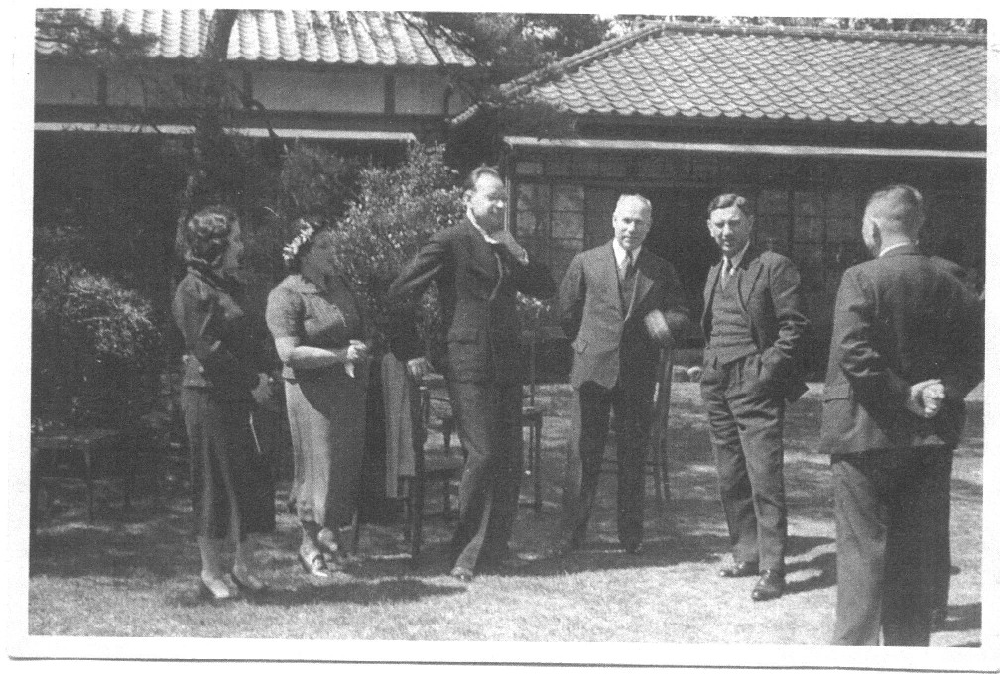

David Annenberg and Carole Freeman Family History and Genealogy Website
Boris Rodov was 1st Secretary at the Soviet Embassy in Japan during the 1930's and 1940's.
tokio_rodov3 Boris Genia Salva and Alexander Rodov in Tokyo 1937 - 1938
The picture was made in Tokyo in Yeghi art studio around 1937-1938.
· There is Genia Slava nee Neiman Rodov (daughter of Nason Neiman),
o when she worked as secretary of soviet ambassador in Tokyo.
o Incidentally the ambassador was killed during Stalin terror.
· To Genia’s left is her husband Boris Rodov
o Whom at the time of this photograph was 1st secretary of embassy in Tokyo
o Their son’s name was Alexander Rodov.
rodov_japanese_peace_talks5 Boris Rodov far left
Pictured below is Genia Slava nee Neiman Rodov’s husband: Boris Rodov taken during peace talks with Japanese

This picture was taken in Tokyo during the 1950’s wherein we see
· Pictured second from the left is Genia Slava Neiman (ie. Nason Neiman’s daughter / Leon Neiman of Israel’s great aunt or Zelik Neiman’s sister). Genia Slava nee Neiman Rodov was from following Neiman descendant's: Ben & Shenya – Leyzer – Zelik – Nason – Genia Slava nee Neiman Rodov (daughter). To Genia Slava’s right is her husband: Boris Rodov, pictured third from the left.

Celebrity Page This link will show where our Celebrity Connections, both proven and unproven are.
Google Search of our Website
Google Search Use this to search our website
Documentation Page This page show's how we document our information.
Information Pages This page provide links to the families via family groups
Photo Page Please check out some of the photo's we have posted
Research Page This is our Main Research Page. It will take you to the various Research information, links and suggestions
Story Page This is our Story Page
This page was last updated on:: January 18, 2015 08:46:02 PM
{kind=link}